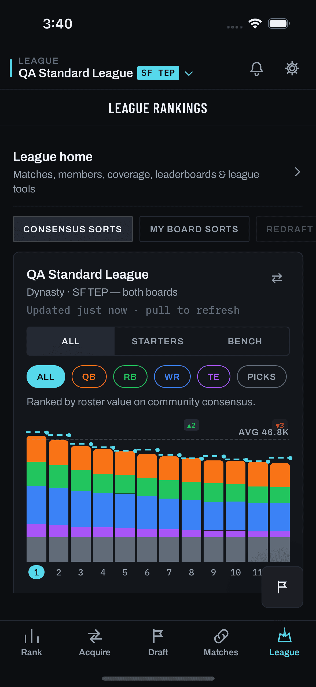

Question this lab answers: what should the Home tab look like so returning users see their trade opponents and get pulled into League Summary's position buyers/sellers split (flag league.pos_candidates)? Today almost nobody finds that split, because Home is four plain text rows.
Primary reference (operator): the FumbleAI homeowner app's Home hub, HomeApp/App/Features/Home/HomeHubView.swift + HomeHubCatalog.swift. It asks the same question our Home asks ("What would you like to do?") and answers it with big tappable tiles that preview live counts. Every direction below is tile-based; none falls back to a link list. FumbleAI's structure is kept and re-rendered in Chalkline tokens; conflicts are listed in §9 and in docs/plans/home-engagement/research.md.
Provenance: there is no capture of Home. The screens/ library froze on 2026-08-11 (D-056) and Home shipped on 2026-10-08 (dd08c7c2, #309). The "before" pane is therefore a labelled reconstruction from mobile/src/screens/HomeScreen.tsx at 22900e02. The only real capture embedded is screens/mobile/league-summary/populated.png (2026-08-11 build), used as the identity anchor for the League rankings tap-through. Every other app frame is a reconstruction or a proposal and is stamped as one. Interim posture per mockups/CLAUDE.md § "Unresolved: the embed rule vs the screen-library freeze".
Sample league (invented, no real handles): "Gridiron Syndicate", 12 teams, SF TEP, Sleeper. You are taxi_squad_tom: 5th overall; QB 7th, RB 2nd, WR 6th, TE 11th. Values use the server's own label form ≈{n} firsts (backend/server.py:889-914, half-first rounding). Fonts render as fallbacks; no network requests.
Round 2 (operator revision): Direction D is the current candidate. Built from C's page: status rows for team outlook, standings and overall rank; all four position tiles with Buy / Sell; a five-tile Get things done. Directions A–C below are the first round, unchanged.
Design only. No mobile/ or backend/ code changed. The recommended direction's scope block is docs/plans/home-engagement/scope.md.
One question and four text rows, each a navigation.navigate to a sibling tab. No data, no state (HomeScreen.tsx:15-44). The four destinations are already in the tab bar directly below, so the screen adds nothing a user can't already reach in one tap, and it never mentions a leaguemate.
Sources: HomeScreen.tsx:15-20 (OPTIONS table: labels + targets + testIDs), :28-30 (heading, sentence case over type.heading), :48-56 (56pt rows, hairline ink.line). TopBar per components.md § Navigation (#223/#224). Tab order per TabNav.tsx:819-981 and D-198: Home · Rank · Acquire · Calibration · Matches · League (Calibration slot icon check, TabNav.tsx:915). FAB = RootNav's single global mount (#188). Files changed since the screen-library freeze: HomeScreen.tsx (new, dd08c7c2), TabNav.tsx, TopBar.tsx.

Chrome anchor. screens/mobile/league-summary/populated.png: the real TopBar (ice tick, LEAGUE micro-label, ice format tile, chevron, bell, gear), the pill-shaped position chips with an ice-filled active chip, the stacked bars and the square flag FAB. Its tab bar (Rank · Acquire · Draft · Matches · League) predates Home and Calibration, and the capture predates the #300 median divider (shipped 2026-08-12). Everything drawn on this page matches this chrome.
Redrawn as a neutral wireframe from HomeHubView.swift:62-126 and HomeHubCatalog.swift:185-242, so you can see the skeleton we kept. It is not FumbleAI's styling (that uses SF Pro, a #1E5AA8 blue, 14pt radii and a blueprint-grid paper texture, none of which Chalkline allows). FumbleAI's HTML mockup (docs/homeowner-app/mockups/index.html) shows a different, older home: a floor-plan canvas. Direction B borrows from that one.
Measured in code: 16pt side padding, 22pt section gap; wide cards min 84pt; grid cards min 132pt, 2 columns (1 at accessibility text sizes, HomeHubView.swift:20); 10pt gaps; badges hide at zero (HomeHubCatalog.swift:337-338). Tiles switch tabs or open the Plan tab with a lens preset via a shared store, never route params (MainTabView.swift:85-96).
| FumbleAI hub | Fleeced Home (Direction A) |
|---|---|
| "What would you like to do?" title | Kept verbatim from today's Home: "What would you like to do today?" (D-198 copy) |
| Header subtitle: the user's own property | The user's own team: taxi_squad_tom · 5th of 12 |
| Live summary capsule, ordered by urgency, never empty | Live line in Chalkline's Banner construction; flare numerals; falls back to an all-clear sentence |
| "YOUR HOME" full-width cards (Floor plan, Yard) | "YOUR LEAGUE": the full-width Trade market hero tile + four position tiles (the league's "floors") |
| Yard card turns into a setup prompt when missing | Hero turns into "Link a league" / "Not enough rosters yet" (§7) |
| "GET THINGS DONE" 2×2 task grid with count badges | Same: Rank · Find a trade · Matches · League, live badges |
| Badge priority ladder; quiet at zero | Same rule: a badge renders only for a real non-zero count |
Card → Plan tab with lens + floor preset (env.selectedLens) | Hero/position tile → League tab with the position preset through a one-shot intent store |
| Canvas "Next:" line naming the item, who, when (index.html:550) | Hero's "Shortest RB rooms" names the four teams |
| Quiet rooms fade so the relevant ones stand out (seven-views.md:34-36) | Direction B's mid-pack teams fade; A's bar strip greys every team but you (also DynastyGM's focus treatment) |
Built from Direction C's page, revised by the operator. Top to bottom: three compact status rows (team outlook, standings, overall rank), each a whole-row button that opens where that fact lives; all four position tiles in a 2×2 grid so nothing hides off-screen, each with Buy and Sell buttons inside the tile; then Get things done: Find a trade as a full-width tile, with Rank players, View matches, Check trends and Search free agents as rows in one card below it. Round-2 trims (operator): shorter status rows, no tagline under the position meters, and the four tasks as full-width tiles in the same format as Find a trade, so Find a trade lands above the fold. The old League tile is gone; the status rows cover League. Round-3 rulings (operator): the Buy/Sell banner is decided UI; Sell lands at the end of the list; Home's Standings row is current standings only, and projections move to a new Standings page.
round(n·0.33) and Buyer on the bottom (:1027-1033). The direction lives one level down, per tapped team: above the line ⇒ target (their roster, "Tap a player to target them from …"), below ⇒ offer (your roster, "… to offer them to …") (:1047-1071, :1935-1938). So Buy RB = acquire RB = the teams above the line (Seller badges, Target verb); Sell RB = move RB = the teams below it (Buyer badges, Offer verb). The honest landing for both is the same list: Buy opens at the top of the list (deepest first); Sell opens at the end of the list (shortest last, operator ruling round 3), each under a pinned banner naming the side (operator ruling: yes). Both are mobile changes; no buy page or sell page exists and none is drawn as if it did.The status rows, all four position tiles and the Find a trade tile sit above the fold on a 393×852 phone. Ice count: 3: the suggested side on banded positions (RB Sell, because you're a Seller; TE Buy, because you're a Buyer) plus the active tab. Every other Buy/Sell is the Secondary construction (line-strong border, chalk text) and every "View" is chalk-dim, so the ≤3 ice rule holds. The dashed warn outline on RB Sell is lab chrome: the 44pt hit area around a 36pt visible button (the compact button's default 4pt vertical hitSlop, components.md § Buttons).
GET /api/league/preferences → team_outlook; when none is declared and trade.outlook_seed is on (lit), inferred_outlook renders as "Not set · reads as Rebuilding". Key ['league-prefs', id] is shared with TradesScreen, Team Review and the in-league calculator, all of which invalidate it on write (#424). View → Acquire with the Trade DNA sheet open, where the outlook is set (operator ruling). Mobile gap: that sheet's open state is local to TradesScreen (:999), so it needs an arrival contract. Alternative reading of "team outlook": the playoff band. That band now lives on the Standings page's Projected tab.settings.{wins, losses, ties, fpts, fpts_decimal} from ['league-rosters', id] + ['league-users', id], both already seeded by session init (state/queryClient.ts:55-66), so there is no new request. Place = win %, then points for, since Sleeper exposes no standings rank. These are actual results, not projections, so the beta no-record rule does not apply: from week 1 the record shows, and before any game is played the row reads "0–0 · no games yet". ESPN/MFL: not served anywhere today (backend gap; see the Standings page), so the row reads "Not available for ESPN yet". No projection, no band and no Monte-Carlo on Home. View → the new Standings page (League tab stack, Current tab). Mobile gap: the new screen.rank + total_value_label of the is_you team), the same request as the tiles, so no extra cost. View → League rankings, all positions. Mobile gap (small): the same intent store must clear a filter left over from an earlier visit.value_labels), a 4px meter of your percentile in the position hex (C's "your shape" tile), and the neutral Seller/Buyer badge or "Mid-pack". No tagline under the meter (operator trim); the named teams are one tap away on the Buy/Sell landing. The tile itself is not a button. Its only controls are Buy and Sell, which avoids the nested-control VoiceOver problem mockups/candidates-300-v2 measured. Data: power-rankings consensus, the shared util from scope.md (W4), so every band equals League Summary's.{leagueId, position, side:'buy'|'sell'} → navigate('League', {screen:'LeagueRankings'}) → League Summary sets basis Consensus, subset All and filter {P}, then scrolls: Buy to the top of the list (deepest first); Sell to the end of the list (shortest last). A pinned banner names the side. Frames below. The suggested side (ice) is the side your band implies; it changes no behaviour.Trades).['progress', id, format], already warm.['league-summary', id], already warm.navigate('Rank', {screen:'Trends'}) (TabNav.tsx:429). No Home fetch, because TrendsScreen's queries take runtime args and are deliberately not prefetched.navigate('FreeAgents'), a root-stack push that mounts its own FAB and HeaderBack (RootNav.tsx:802). No Home fetch.outlook_sim_count, database.py:3037) is gone from Home. It now runs only when someone taps Projected on the Standings page, on the cache key League Summary already shares. Round 2 had 3 requests, 1 heavy.Both frames are the shipped #300 list (reconstruction; see §6 for the full sourcing). What's new is the scroll target and the banner, which is now decided UI (operator ruling, round 3). The banner is a Chalkline Banner (ink-2, hairline, ice tick, body-sm, ghost close control), pinned between the stack header and the scrolling page. That way it is on screen in both landings whatever the scroll offset, and Sell can scroll all the way to the end. It names the position, which matters because the pills have scrolled out of view. It clears on its close control, on any position-filter change, and on leaving the screen. The faint ink-1 fill on the relevant side's rows is a surface-step emphasis that ships with it: no colour, nothing hidden.
Outlook strip, basis toggle, RB pills and chart sit above the viewport.
Buy = acquire RB = teams above the line. "Top" means the top of the list, not the page. The page top is the League home row, basis toggle, Season-outlook strip and chart card (LeagueSummaryScreen.tsx:1530-1700), and on a phone none of the list shows there. Tapping ChubbThumper opens its drill-in in the shipped target direction: their RBs, "Tap a player to target them from ChubbThumper." (:1063-1071, :1935-1938), firing league_candidate_pinned {verb:'target', side:'above'}. Your own row opens your plain roster (:1047-1056).
Rows 1–5, the chart and the strip sit above the viewport.
End of page.
Sell = move RB = teams below the line, shortest last (operator ruling: open on the shortest teams). The team list is the last child of the page's ScrollView (list at LeagueSummaryScreen.tsx:2193, ScrollView closes at :2230), so scrollToEnd() lands exactly here with puntgods (12th) and LaPortaPotty (11th) in view. Tapping puntgods opens the shipped offer direction: your RBs, "Tap a player to offer them to puntgods." (§6 step 3), firing league_candidate_pinned {verb:'offer', side:'below'}.
scrollRef on the page (:479). The League tab re-tap already calls scrollTo({y:0}) on it (:483-486).{leagueId, position, side} consumed on focus, setting basis Consensus, subset All and filter {P}.scrollToEnd() once the filtered content settles (on the next onContentSizeChange), with no measurement. Buy is scrollTo({y: listTop}) from one onLayout on the list container. Both are simpler than the round-2 plan of measuring the divider row.check-league-candidates-300.js / check-analytics-300.js. It touches neither the arithmetic nor the exposure emitter. A new guard should pin that it renders only for an intent arrival and clears on filter change.Operator ruling, round 3: Home shows current standings only. Projections move one tap deeper, to a new Standings page with a Current | Projected segmented control. The control is the shipped Matches segment construction (full-width hairline bar, radius 4, active segment filled with a 2px ice underline; screens/mobile/matches/populated--mutual.png), not a new pill style. Current is the default and costs no simulation. Projected is the existing Season-outlook content, fetched only when selected.
Week 6 · ordered by record, then points for
Your league's own tiebreakers and divisions may order tied records differently.
Sleeper data, no new request: each roster's settings.{wins, losses, ties, fpts, fpts_decimal} from ['league-rosters', id], joined to ['league-users', id] for names. Session init has already seeded both (state/queryClient.ts:55-66), and the proxy passes Sleeper's raw rosters through (server.py:21843-21845). The outlook pipeline reads the same fields (backend/outlook/league_state.py:197-209). Sleeper exposes no standings rank, so the order is computed (win %, then points for) and the caption says so. Ties render as W–L–T. The You row reuses TeamRow's treatment: ink-2 fill, ice numeral, ice "You" badge.
Blended projection · order = projected finish · top 6 make the playoffs
The existing Season-outlook section, verbatim in spirit (LeagueSummaryScreen.tsx:2892-3046): warn "Season outlook" tick, beta ribbon ("Projected"; it adds "preseason · beta" before week 6), the source caption, single-line rows, "top 6 make the playoffs" cutline, and Likely / Toss-up / Unlikely bands. No percentages, no title odds, and records only once meta.beta clears (week 6+, :207-212): week 6 is shown, so records appear. Data: GET /api/league/outlook?basis=consensus on the shared ['league-outlook', id, 'consensus'] key, with enabled only while Projected is selected. The 10,000-sim run happens on this tap, never on Home.
LeagueStandings, a sibling of LeagueHome (TabNav.tsx:579-596), with subScreenOptions('Standings', 'LeagueRankings'): the same always-on back control, falling back to League rankings, that LeagueHome uses (:587-592). Home's row calls navigate('League', {screen:'LeagueStandings'}). This follows FumbleAI's hub, where cards switch tabs rather than push over them. Standings is League content, and the tab bar stays correct with League highlighted. A deepLinks.ts route goes in with it (navigation/CLAUDE.md "Adding a screen" rule).FeedbackFAB aboveTabBar={false} and an explicit HeaderBack (native back is dead on iOS 26 for root pushes over the tab bar). This is listed as an operator call.SeasonOutlookSection, OutlookRow and OutlookUnsupportedRow are module-local in LeagueSummaryScreen.tsx (:2892-3061). Extract them to one component that both screens render, so the calibration rules (no %, no title odds, beta-gated records) live once. A guard pins them.RosterRow gains an optional settings (wire type only; the backend already serves it). Backend (ESPN/MFL only): no endpoint returns their current standings (see ESPN frames below).The first Projected tap starts the outlook request, the existing section's loading shell (warn tick + spinner, LeagueSummaryScreen.tsx:2899-2907). Switching back to Current is instant; Current never waits on this. A repeat within staleTime, or after League Summary already fetched the same key, renders from cache.
Fleeced can't read this league's standings yet. Overall rank and the trade market work as usual.
Backend gap. ESPN's record is already parsed at import from the same view=mTeam read (wins / losses / ties / pointsFor / playoffSeed, espn_service.py:445-513), but nothing persists or serves it. MFL reads no standings at all (mfl_service.py has no leagueStandings call). Smallest fix: GET /api/league/standings?league_id= → {platform, as_of, teams:[{user_id, display_name, wins, losses, ties, points_for, seed?}]}. ESPN serves the existing mTeam parse, where playoffSeed gives ESPN's own tiebreak order; MFL adds one TYPE=leagueStandings export read. Once that exists, this frame becomes the Current table.
Season outlook needs schedule and scoring history — Sleeper leagues only for now.
The existing OutlookUnsupportedRow copy, verbatim (LeagueSummaryScreen.tsx:3052-3061). No request, no retry. The client gate is the same one League Summary uses. This holds whether or not ESPN/MFL Current exists.
Each status row and the position grid load and fail independently. The Get things done tiles render in every state, so Home always reaches Find a trade, Rank, Matches, Trends and Free agents in one tap.
Static ink-2 bars, no shimmer. Labels and position names render immediately; Buy/Sell stay disabled until the bands exist, so a tap can't land on a list Home hasn't described. Standings render from the Sleeper rosters session init already cached, usually instantly. A row that is still loading is not tappable.
One row failed and the others are untouched: the row's affordance becomes Retry (refetch() on that query only). If power-rankings fails, the Overall rank row and the whole position grid take the A-style "Couldn't load rosters / Try again" card together, because they share one payload.
Your outlook, standings and rank, plus who's buying and selling at each position, need a league. Link Sleeper, ESPN or MFL.
Status rows and position tiles collapse into one setup card (FumbleAI's card-becomes-setup pattern) → LeaguePicker. Get things done stays; View matches and Search free agents read "Needs a league".
Standings: ESPN's record is parsed at import but nothing serves it (backend gap, see the Standings page). The row says so, with no request and no View. Once /api/league/standings exists it reads like Sleeper's. Team outlook works on every platform; this user hasn't set one, so the inferred read shows and the affordance says Set. Overall rank and the tiles work unchanged, because power-rankings reads the league_members snapshot for ESPN/MFL (server.py:29185-29188). 10-team bands are 3/4/3.
Buying and selling by position needs at least 3 valued rosters. This fills in as the league's rosters sync.
Same gate as guide beat N5 (LeagueSummaryScreen.tsx:988-992). Standings come from Sleeper's live rosters, not the valuation snapshot, so they can be complete while the snapshot is thin. The grid becomes one honest card with no Buy/Sell, because there is no line to buy or sell across.
With no median (no_median, old server) or no boundary (no_split), League Summary draws no line and the drill-in carries no Offer/Target verbs (candidateDir is null, :1047-1056). Buy and Sell would promise directions the destination can't give, so they become one "See TE ranking" button to the plain TE ordering.
Home's row shows actual standings, so the Season-outlook beta rule (no records in weeks 0–5, LeagueSummaryScreen.tsx:207-212) does not apply here; it governs projections, which now live on the Standings page. The record shows from week 1. Before any game is played, every team is 0–0, so the row says "no games yet" rather than ranking a 12-way tie.
| D module | Endpoint · field | Query key | Cost on Home mount | Status |
|---|---|---|---|---|
| Team outlook row | GET /api/league/preferences · team_outlook, inferred_outlook | ['league-prefs', id] (shared) | +1, cheap DB read | Existing. View → Trade DNA sheet (operator ruling): mobile gap |
| Standings row (current) | Sleeper: rosters settings.{wins,losses,ties,fpts,fpts_decimal} + league users. ESPN/MFL: none | ['league-rosters', id], ['league-users', id] (seeded by session init) | 0 (Sleeper); ESPN/MFL +1 light once the endpoint exists | Existing on Sleeper; backend gap on ESPN/MFL. View → Standings page: mobile gap |
| Standings page · Current | same as the row | same keys | n/a (not Home) | Sleeper existing; ESPN/MFL backend gap (GET /api/league/standings) |
| Standings page · Projected | GET /api/league/outlook?basis=consensus, on selection only | ['league-outlook', id, 'consensus'] (shared with League Summary) | n/a (not Home); heavy, Sleeper only | Existing endpoint; section extraction = mobile gap |
| Overall rank row + position tiles | GET /api/league/power-rankings?basis=consensus | ['league-power-rankings', id, 'consensus'] (shared) | +1 (as A) | Existing. Buy/Sell landing (filter + side scroll): mobile gap |
| Rank, View matches | progress; league summary | already warm | 0 | Existing |
| Find a trade, Check trends, Search free agents | navigation only | none | 0 | Existing routes |
| Total on Home | 2 new, none heavy (round 2 was 3 with 1 heavy; A was 1) | One more than A: the cheap preferences read | ||
The first-round proposals as the operator reviewed them. Direction D above is built from C's page and supersedes the round-one recommendation for now; A–C are kept for reasoning.
FumbleAI's hub, one to one. Header + live line, a YOUR LEAGUE section whose full-width hero is the Trade market (the buyers/sellers split, pre-chosen at your most lopsided position), four position tiles that each open their own split, then the familiar four destinations as a 2×2 tile grid. The whole hero is one button. It lands on League rankings with RB already selected, so the split the user has never found is the first thing they see.
RB: 4 teams are short and you're 2nd · 2 mutual matches waiting
You're 2nd of 12: ≈5.5 firsts of RB value against a league median of ≈2.5 firsts.
Shortest RB rooms: puntgods, LaPortaPotty, tankszn_tre, kupp_of_joe
Frame extended to show the whole scroll. On a 393×852 phone the fold line falls inside the task grid, which is FumbleAI's own density (its grid's bottom row lands at the fold). Ice is used in three places: the hero's CTA, the "YOU" marker, the active tab. scr bottom padding clears the global FAB so it never covers the League tile.
GET /api/league/power-rankings?basis=consensus; matches = GET /api/league/summary → matches_mutual. Existing endpoints. Both queries are already warm: TopBar fetches ['league-summary', id] (TopBar.tsx:175).teams[].positions[P].{value,value_label}, teams[].is_you, teams[].display_name|username, medians[P].{value,value_label}. Ordering, median cut and the round(n·0.33) Seller/Buyer bands are exactly LeagueSummaryScreen's arithmetic (:661-671, :885-892, :1018-1034), extracted into one shared pure util so Home's "4 teams" is the number of Buyer badges the user then sees. Position choice: the core position where you carry a band with the largest |you − median| / median; tie → QB, RB, WR, TE order. Bars: the DynastyGM focus treatment (you in the RB hex, everyone else ink-3) on League Summary's dashed AVG-line construction. Existing endpoint. Query key ['league-power-rankings', id, 'consensus'] is shared with League Summary and the in-league calculator, so Home warms the cache they read. Mobile gap: League Summary has no way to arrive pre-filtered. Needs a one-shot intent store (see scope).03-analyzer.png). Same payload, same util. Existing endpoint.GET /api/rankings/progress → unlocked, per-position counts vs threshold; key ['progress', id, format], already fetched by RootNav.tsx:396-402. Badge only when something is unfinished: flare "3/4" + "TE not ranked yet". Existing endpoint./api/league/summary → matches_mutual (badge, flare = count emphasis) and matches_awaiting. These equal the Matches tab's two segments by contract (api-reference.md League table). Existing, already warm.teams[].rank of the is_you team from the same power-rankings payload (identical to /api/league/rank-chip, which reuses the same computation, server.py:28891 + :29803). No playoff band on Home: /api/league/outlook is a Monte-Carlo run and Sleeper-only; keep Home to one new request. Existing endpoint.FumbleAI's floor-plan canvas, with the league as the house. Position pills are the floors; a lens dropdown changes what each team tile shows (Trade market · Power · Matches); every team is a big tappable "room" tile in value order with the median drawn across the grid; mid-pack teams fade like FumbleAI's quiet rooms; a bottom strip carries the totals and a named "Next:" line. Tapping a team opens a half-height team sheet (FumbleAI's room sheet). The split is the Home.
The flare 6px square marks the teams worth noticing for you (the buyers, since you sell RB): the NotificationRow unread-dot construction, informational only, never the affordance. Mid-pack rooms fade to a dashed ink-0 tile: FumbleAI's quiet rooms.
FumbleAI's room sheet (half height, the tapped room stays visible above) in Chalkline's sheet construction: ink-2, top radius 8, grabber, solid scrim, explicit close. "Open in League rankings" lands on RB + drilled into puntgods, where the shipped Offer rows live.
rank), Matches (per-team mutual count). Pills reuse League Summary's pill construction. Existing endpoints for Trade market and Power; per-team match counts would need /api/trades/matches/all grouped client-side..strip (index.html:106): scope stats + a named "Next:" line. "With WR to spare" = that team's best position rank. Tap → League rankings RB + drilled into puntgods. Mobile gap: the intent store must also carry a team to focus.Named opponents first. A compact "your shape" tile names where you're rich and where you're short, then horizontally scrolling rails of team tiles: buying your RB depth and selling what you need at TE. Each team tile is a big tappable card with its shape line and lands on League rankings with that position selected and the team already drilled in, one tap from the shipped Offer/Target rows. The four destinations become a third rail.
Rails scroll sideways; the partly-visible third tile is the scroll affordance. "Offer RB" / "Target TE" reuse #300's verbs (Offer = yours, Target = theirs). Chevrons stay chalk-dim: with up to eight team tiles on screen, ice would blow the ≤3 ration.
docs/business/product/2026-07-26-dynastydealer-dtf-teardowns.md:59-62) and Dynasty Nerds' cross-league "Trade target · RB1 · TRADE ›" rows (05d-player-detail-stats-leagues.png). Power-rankings payload for ranks. Backend gap: a per-opponent window chip (Contender / Rebuilding) is not on power-rankings; opponent_outlook is stamped on trade cards only (trade_service.py:6495) and Team Review's partners.opposed_window is caller-centric and flag-gated. Drawn as a dashed placeholder. Mobile gap: intent must carry {position, focusUserId} so the tap lands drilled in.docs/competitor-research-trade-quality-2026-09-04.md:101). Two rails of team tiles is also the most vertical space spent on one position pair.| A · Hub | B · League plan | C · Partner rails | |
|---|---|---|---|
| FumbleAI fidelity | The shipped hub, one to one (header, live line, "your" section, 2×2 grid) | The older canvas mockup (lens, floors, rooms, strip, room sheet) | Hub cards re-cut as rails; least literal |
| Pull into buyers/sellers | Hero teaches the mechanic and lands on the split pre-filtered; four position tiles = four more doors | Home is the split, so the pull into League Summary is weaker (it's a second visit to the same idea) | Lands deepest (drilled into a named team), but skips the split view the operator wants found |
| Opponents named | 4 names, in one line | All 12, as tiles | 6+, as tiles |
| Quick access to Rank / Trade / Matches / League | Full 2×2 tiles with live detail | Compact 4-up row | Sideways rail (worst) |
| New network requests | 1 (power-rankings consensus, a cache League Summary reuses) | 1–2 (+ matches grouping for the Matches lens) | 1 |
| Backend work | None | None for v1 lenses | None for v1; window chip is a backend gap |
| Mobile build | HomeScreen + one pure util + one intent store + a small League Summary consume hook | All of A + a grid canvas + a lens + a new team sheet | All of A + rails + focus-team intent |
| Drift risk vs League Summary | Low: one shared util, one landing | High: a second rendering of the same list | Medium: claims about teams outside League Summary's own words |
The whole point of the hero. Step 2 is the shipped #300 surface (median divider, Seller/Buyer badges) arriving with RB already applied. Step 3 is the shipped drill-in, where an Offer tap pins the player and hands off to the finder (league_candidate_pinned, the feature's conversion moment). Nothing on steps 2–3 is new UI; the only new behaviour is that step 2 arrives pre-filtered and scrolled to the list.
You're 2nd of 12: ≈5.5 firsts against a median of ≈2.5 firsts.
Shortest RB rooms: puntgods, LaPortaPotty, tankszn_tre, kupp_of_joe
On press: pressed fill ink-3 (Chalkline state change; FumbleAI's 0.98 scale is not used) → emit home_tile_tapped {tile:'market', position:'RB', side:'seller'} → write leagueSummaryIntent {position:'RB', seq} → navigation.navigate('League', {screen:'LeagueRankings'}). No route params: same store-first contract as the #300 pin handoff (LeagueSummaryScreen.tsx:1139-1144) and FumbleAI's env.selectedLens.
Ranked by RB value only — chart reordered.
Reconstructed from source (the capture predates #300): pills + hint per the shipped chart card (hint copy verbatim, LeagueSummaryScreen.tsx:1735); rows = TeamRow (LeagueSummaryScreen.tsx:2551-2600, "You" badge in ice, ink-2 row fill); neutral Seller/Buyer badges for the top/bottom round(12·0.33)=4 (:1018-1034); divider = rule · label · rule in chalk-faint (:2214-2224); values = positions.RB.value_label (:1098-1108). The chart card is compressed here so the list is visible: the consume hook scrolls to the list. Arriving fires the shipped league_pos_candidates_viewed {position:'RB', divider:'shown'}, plus the proposed entry:'home' prop.
Tap a player to offer them to puntgods.
Reconstructed from source: a team below the line ⇒ direction offer ⇒ your roster primary, theirs as the collapsed mirror (LeagueSummaryScreen.tsx:1063-1071); caption copy verbatim (:1935-1938); mirror toggle "puntgods' RB" (:1966-1968); header title swaps to the team, "All teams" back (#302). A row tap pins the give side, scopes the finder to puntgods and fires league_candidate_pinned {verb:'offer', position:'RB', rank:12, side:'below'}, all shipped. Row layout schematic: see mockups/candidates-300-v2/ for the measured tile.
Every state keeps the 2×2 task grid, so Home always gets the user to Rank / Find a trade / Matches / League in one tap. Only the YOUR LEAGUE section changes. Frames show that section; the grid below each is unchanged unless noted. The first-run user never sees Home at all: D-198 keeps them landing on Acquire until their first swipe, and nothing here changes that.
Static ink-2 bars (no shimmer: a moving gradient is banned). The task grid renders immediately with whatever badges are already cached (league-summary and progress are warm before Home mounts). Cached power-rankings from a prior visit (persisted query cache, 30 min) render instantly, with no skeleton.
Fleeced splits your league into buyers and sellers by position and names who's short where. Link Sleeper, ESPN or MFL to see it.
Guarded on useSession.league == null (the same null LeagueSummaryScreen.tsx:406 handles). FumbleAI's "Add your yard" card-becomes-setup pattern. Button → LeaguePicker. Position tiles hidden. Grid: Matches and League tiles drop their badges and read "Needs a league".
3 teams are deep: dmorgan, kbell_ff, ESPNFAN4512.
The split works unchanged: power-rankings reads the league_members snapshot for every platform (server.py:29185-29188 docstring: "ESPN-imported leagues work unchanged"). ESPN carries no pick ownership, which a single-position split never uses. Differences: the bands are 3/4/3 in a 10-team league; no playoff outlook anywhere on Home (Sleeper-only, not used by A anyway). A buyer-side hero ("You're 9th") flips the copy to name sellers.
We can value 2 rosters in this league so far. The buyer and seller split needs at least 3; it fills in as the league's rosters sync.
The same gate as guide beat N5 (LeagueSummaryScreen.tsx:988-992): ranked.length ≥ 3 and a median at ≥1 core position. Copy never claims leaguemates must "join". Power-rankings values every roster in the snapshot whether or not its owner uses Fleeced, so the only cause is an unsynced snapshot. Position tiles hidden.
No position puts you in the top or bottom four. Pick one to see who's short and who's deep.
No banded position ⇒ the hero has no CTA and becomes the explainer; the four position tiles are the doors. Honest: we don't invent an "opportunity" the bands don't show.
When the payload has no median for a position (old server: no_median) or the median marks no boundary (no_split, e.g. every TE room equal), the tile says so and is never the hero. If no position splits at all, YOUR LEAGUE collapses to a single "League rankings" tile.
The league's rosters didn't load. Check your connection and try again.
Names what failed and what to try (BRAND.md § in-app copy). Only this section errors; the task grid keeps working. Retry = refetch() on the shared query.
league.pos_candidates off
The hero promises a split that only renders with league.pos_candidates on, so with it off YOUR LEAGUE is not rendered at all and Home is the header + task grid. With the Home flag nav.home_hub off, Home is today's four text rows, byte-identical.
| Module | Endpoint · field | Mobile client · query key | Status |
|---|---|---|---|
| Hero / position tiles / your shape / team rooms / rails | GET /api/league/power-rankings?basis=consensus · teams[].{rank,user_id,display_name,username,is_you,positions[P].value,positions[P].value_label}, medians[P].{value,value_label} | api/league.ts getPowerRankings · ['league-power-rankings', id, 'consensus'] (shared with LeagueSummary + InLeagueCalculator) | Existing. Arithmetic must be the shared util |
| Overall rank (League tile, subtitle) | same payload · rank of the is_you team (= /api/league/rank-chip) | same key | Existing |
| Matches badge + detail | GET /api/league/summary · matches_mutual, matches_awaiting | getLeagueSummary · ['league-summary', id] (TopBar already fetches) | Existing, warm |
| Rank tile | GET /api/rankings/progress · unlocked, QB/RB/WR/TE, threshold | getProgress · ['progress', id, format] (RootNav already fetches) | Existing, warm |
| Arrive pre-filtered on League rankings | none (client state) | new state/leagueSummaryIntent.ts one-shot store; LeagueSummary consumes on focus | Mobile gap |
| Arrive drilled into a team (B strip, C rails) | none | same store + focusUserId | Mobile gap (B, C only) |
| Opponent window chip (C) | not served on power-rankings; opponent_outlook only on cards | n/a | Backend gap (C only) |
| Deck-ready count on Find a trade | no cheap read | n/a | Backend gap, not drawn |
| Per-team match counts (B Matches lens) | GET /api/trades/matches/all grouped by opponent | existing ['matches','all'] prefetch (TabNav.tsx:971-975) | Existing (client grouping) |
| Playoff band (deliberately omitted) | GET /api/league/outlook (Sleeper-only, Monte-Carlo) | ['league-outlook', id, basis] | Existing, kept off Home in A and in D; D shows it only on the Standings page's Projected tab |
| D · Team outlook row | GET /api/league/preferences · team_outlook / inferred_outlook | ['league-prefs', id] | Existing (+1 cheap); View → Trade DNA sheet = mobile gap |
| D · Standings row (current) | Sleeper rosters settings.{wins,losses,ties,fpts} + league users; ESPN/MFL: no source | ['league-rosters', id], ['league-users', id] (seeded) | Existing on Sleeper (0 requests); backend gap on ESPN/MFL |
| D · Standings page | Current: as the row. Projected: GET /api/league/outlook, on selection only | as the row; ['league-outlook', id, 'consensus'] | Mobile gap (new screen + Season-outlook extraction); ESPN/MFL Current = backend gap |
| D · Buy / Sell landing | none (client state) | intent {position, side}; Buy = list-top onLayout, Sell = scrollToEnd() | Mobile gap; pinned banner (decided) |
| D · Check trends, Search free agents | navigation only (Rank › Trends, root FreeAgents) | none | Existing routes |
outlook_sim_count, database.py:3037) no longer runs on Home; it runs only on the Standings page's Projected tab. Round 2's D added three, one heavy.| FumbleAI (value · source) | Chalkline rule | Rendered here as |
|---|---|---|
| Card radius 14, icon-tile radius 10.8/14 (HomeHubView.swift:311-313, :349-355, :372) | Radius ≤8 except specced pills | Cards 8 (--r-md), icon well 4 (--r-sm), badges 2 (--r-xs) |
| Pill badges + summary capsule (:390, :91) | Pills only for count badges / specced chips | Badges are the 2px Badge construction; the capsule is a Banner (radius 4) |
SF Pro (.system), mockup stack -apple-system,"SF Pro Text","Inter",system-ui (index.html:12) | No Inter / system stack | Barlow Condensed (title, hero headline), Archivo (UI), IBM Plex Mono (every number) |
Accent #1E5AA8 on accent-soft rgba(30,90,168,.11) (index.html:17-18) | Ice for actions, flare for highlights, no alpha-tint fills | Icon wells ink-2 with chalk-dim glyphs; ice only on the hero CTA, YOU marker, active tab |
Attention badge: danger #C23A2E on danger-soft (:377-392) | --neg is pass/error only; flare is the highlight | Flare-bordered mono count (Matches "2"); never red for a count |
| Blueprint-grid paper texture on page + wide cards (:58, :404-420) | Solid ink surfaces; no decorative texture in chrome | Dropped. The hero's bar strip carries the "this is your league" visual instead |
| Pressed: scale 0.98 + opacity 0.85 (:394-401) | State changes use surface/border, no lift/scale | Pressed fill ink-3 (§6 step 1) |
| "sparkles" icon on the summary (:82) | Chalkline icon set only; no decorative glyphs | Ice tick of the Banner construction |
| Strip/menu/sheet shadows (index.html:106, :154, :160) | One shadow, sheets/menus/toasts only | Tiles: hairline only. B's team sheet: --shadow-sheet permitted (not drawn) |
| Stock iOS tab bar blur material (MainTabView.swift:27) | No blur | Our existing solid ink-0 tab bar, unchanged |
Light-first theme (--page:#E8EAED) | Dark-only | Dark ink steps throughout |
| Gradient legend swatch / hatch (index.html:225, :286) | No gradients | Not used: B's quiet rooms use a dashed border instead of a hatch |
Lab chrome exempt from the app rules: the 22px phone bezel, dashed .ann tags and the fold line (warn colour), page furniture. No rule in app UI sets text below 11px.